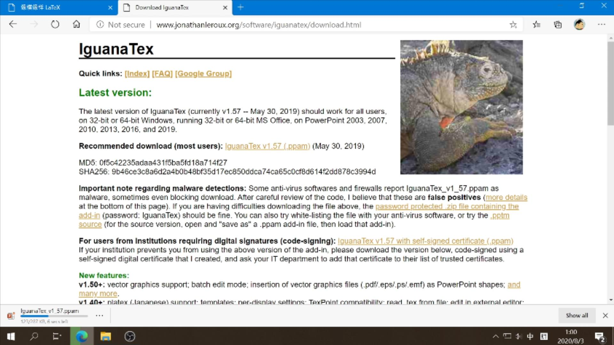
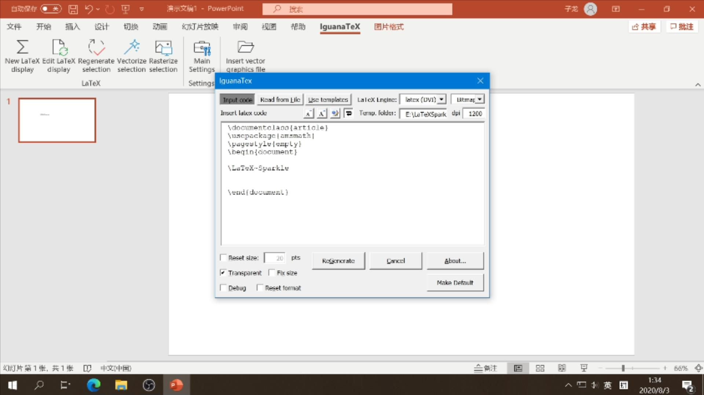
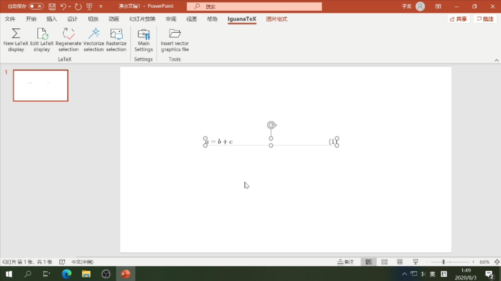
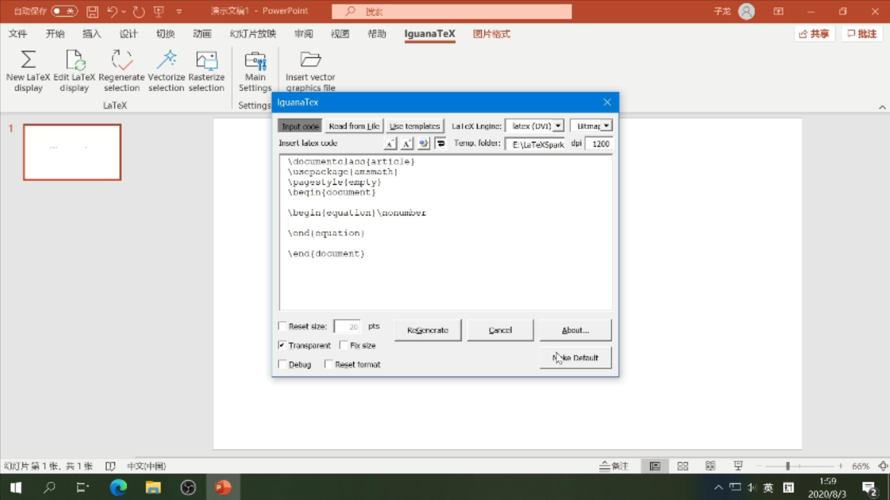

Bilibili
Bilibili3.1 引子
3Blue1Brown 视频、旧视频
《费曼的奇妙观点》系列完结了，或许你会好奇这种类似于 3Blue1Brown 风格的视频是怎么做出来的，那么本期视频就来告诉你如何使用 PowerPoint 制作 \(\rm \LaTeX\) 风格的演示视频。
3.2 各种方式
三屏展示三种方式，抽取式
大约有三种方式在标准视频帧内原生地展示 \(\rm \LaTeX\) 公式，分别为 Beamer, PowerPoint, Manim。
Beamer 语法页面与样式页面
3.2.1 \(\rm \LaTeX\) 所推荐的原生方式是使用 Beamer 宏包所提供的预设模板，以frame环境分割每一个幻灯片，最终通过 PDF 格式保存。但是这种方式所能使用的模板很是有限，并且默认模板样式上有些过时了，这种正式版式更适合于正式场合的讲演，展示方式上可能不是那么的有趣。
Manim Kindergarten 相关视频、代码页、转换样例视频
3.2.3 Manim (Mathematical Animation Engine) 是一个用于制作视频的动画引擎，它用 Python 编程的方式创建精确的动画。有兴趣学习的小伙伴可以前往国内 Manim Kindergarten 创作社区查看详情。用 Python 编程确实挺好玩的，就是配置和学习起来不是特别容易，里面确实有许多好玩的动态效果，比如形状转换动画、文字的描边淡出效果、三维数学动画，更加适合视频这种类别。
老片段
3.2.2 IguanaTeX 就是一款能在幻灯片随地插入 \(\rm \LaTeX \)公式的 PowerPoint 插件。配合 Office 365 的平滑切换就能够像模像样。
3.3 配置
3.3.1 前往网站下载 IguanaTeX 加载项，Mac 用户有一个第三方版本。安装Office 365 或 2019 以使用更新的功能。

3.3.2 让插件常驻 PowerPoint。打开 PowerPoint，进入文件选单，点选选项，在加载项选项卡中，管理 PowerPoint 加载项并转到，添加 IguanaTeX 加载项。完成后关闭。这样每次打开 PowerPoint 的时候就能看到这个插件了。
3.3.3 在开始之前，还是需要先安装 \(\rm \LaTeX \) 的！可以查看上一个视频以观详情。
高级弹幕，跳转链接。
3.4 插件介绍
3.4.1 New LaTeX display 创建新的\(\rm \LaTeX \) 公式。在中间的空白区域输入一些文字，比如：\LaTeX Sparkle，如果一切顺利的话，单击Generate按钮就可以生成了。
头秃时刻：\LaTeX 可以生成专有符号 \(\rm \LaTeX \) 。备注：如果不顺利，可以勾选Debug模式，根据 MikTeX 引导安装对应的包即可。
哦，好像少了个空格，\(\rm \LaTeX \) 是吞空格的，选中后单击Edit LaTeX display编辑 \(\rm \LaTeX \) 公式，在中间加入一个波浪线就可以了！
头秃时刻：~ 代表空格。 3.4.2 而我们一般都需要使用公式环境，就在正文创建一个equation环境，在其中加入公式，例如：a = b + c，单击ReGenerate按钮。
头秃时刻：equation 环境专门用于生成公式，使用 \begin 和 \end 定界符包住公式区。\begin{equation}
公式区
\end{equation}
3.4.3 然而却多出现了一个公式标号，不太爽，可以通过添加无编号标记去除，切走公式区，我们就可以就现状单击Make Default按钮存储为默认状态了。这样，下次再创建公式时，就可以使用当前的模板了。
头秃时刻：\nonumber 为无编号标记。